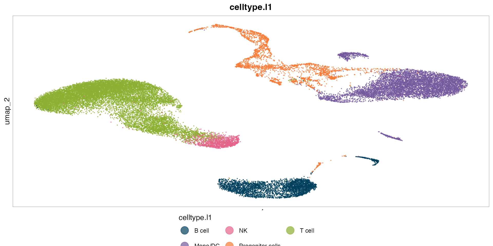
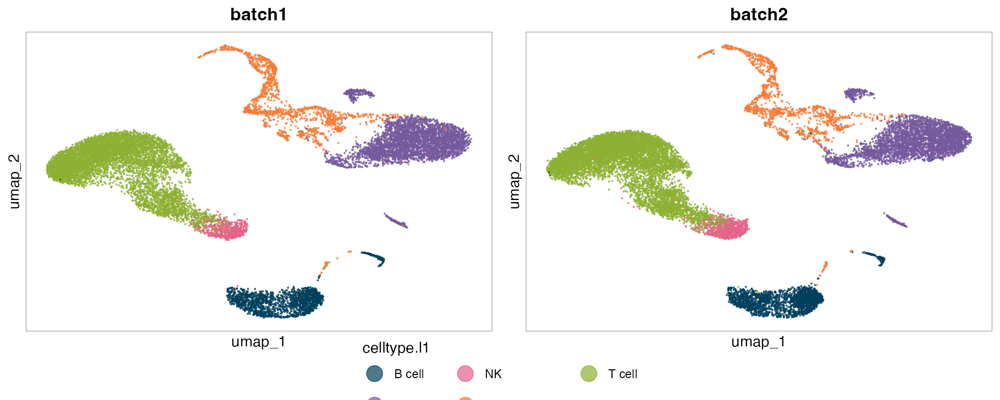
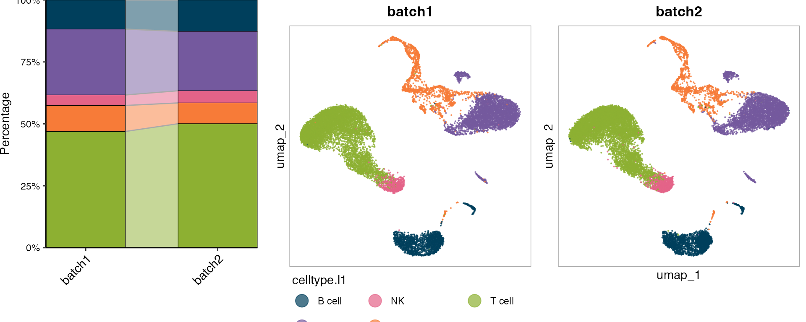
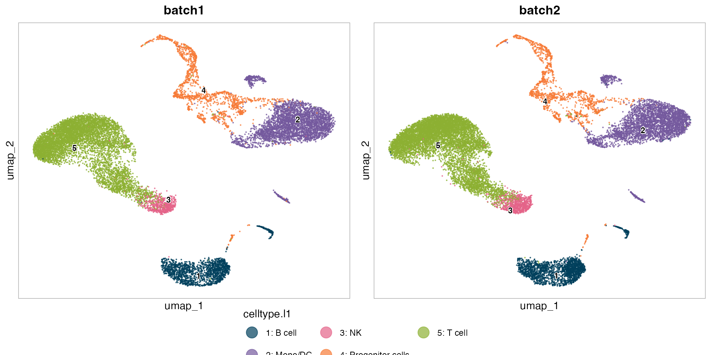
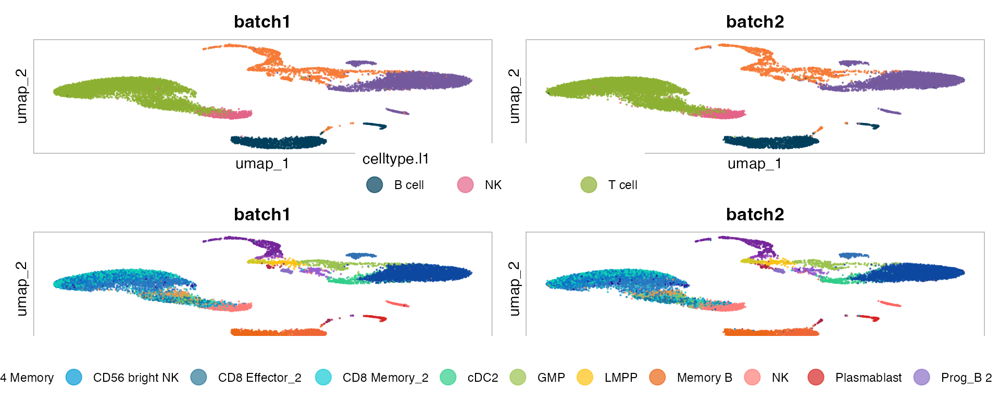

scSidekick — UMAP Visualization: PlotDimPlots
03_umap_visualization.RmdOverview
PlotDimPlots() generates a grid of UMAP (or any
reduction) scatter plots.
-
group.bycontrols which metadata column colors each cell -
split.bycreates one column of panels per level (one panel per donor, sample, condition, etc.) -
row.bycreates one row of panels per level - Pass a vector to
group.byand scSidekick iterates, producing one complete figure per variable
Colors come from PrepObject automatically — no need to
pass them manually.
1. Basic UMAP by cell type
PlotDimPlots(bmcite, group.by = "celltype.l1",split.by = NULL)
2. Split across donors
split.by = "donor" creates one panel per donor. Each
panel shows only that donor’s cells, colored by cell type. The legend is
shared.
PlotDimPlots(bmcite,
group.by = "celltype.l1",
split.by = "donor")
3. Adding a composition trend panel
show_trend = TRUE appends a stacked bar chart to the
right showing the proportional cell-type composition per split group —
reads as a combined spatial + compositional figure.
PlotDimPlots(bmcite,
group.by = "celltype.l1",
split.by = "donor",
show_trend = TRUE)
4. Cluster labels at centroids
show_labels = TRUE overlays the level name at the
centroid of each group, avoiding legend look-up.
PlotDimPlots(bmcite,
group.by = "celltype.l1",
show_labels = TRUE)
5. Multiple group.by — one figure per variable
Pass a character vector to produce one complete figure per grouping variable. This is the primary way to compare how different annotations map onto the same embedding.
p=PlotDimPlots(bmcite,
group.by = c("celltype.l1", "celltype.l2"))
patchwork::wrap_plots(p,ncol = 1)
6. Row grouping with row.by
row.by creates a 2-D grid: rows = levels of
row.by, columns = levels of split.by. Use this
to compare two categorical cuts simultaneously.
PlotDimPlots(bmcite,
group.by = "celltype.l1",
row.by = "donor",
split.by = "lane")7. Custom colors
Override PrepObject defaults by passing a named vector
to colors.
my_cols <- c(
"CD4 T" = "#003f5c",
"CD8 T" = "#227ed4",
"NK" = "#a05195",
"B" = "#d45087",
"Mono" = "#ffa600",
"DC" = "#42a665"
)
PlotDimPlots(bmcite,
group.by = "celltype.l1",
colors = my_cols)8. Controlling column order
split.col.levels enforces a specific column order.
Useful when donors or samples have a meaningful biological order
(e.g. time points).
PlotDimPlots(bmcite,
group.by = "celltype.l1",
split.by = "donor",
split.col.levels = c("batch2", "batch1"))9. Saving to disk
Supply output_dir and object_name to
auto-save every figure as a PDF. The filename is constructed from
object_name, group.by, and
split.by.
PlotDimPlots(bmcite,
group.by = c("celltype.l1", "celltype.l2", "seurat_clusters"),
split.by = "donor",
show_trend = TRUE,
output_dir = "./bmcite_Figures",
object_name = "bmcite",
subset_name = "AllCells")Parameter reference
| Parameter | Type | Default | Description |
|---|---|---|---|
group.by |
character (vector) | from PrepObject
|
Variable(s) used to color cells |
split.by |
character (vector) | from PrepObject
|
Variable(s) that create columns |
row.by |
character | NULL |
Variable that creates rows |
show_trend |
logical | FALSE |
Append stacked-bar trend panel |
show_labels |
logical | FALSE |
Overlay group labels at centroids |
colors |
named character | NULL |
Override palette |
reduction |
character | "umap" |
Reduction to plot |
pt.size |
numeric | 0.1 |
Point size |
trend_width |
numeric | 1 |
Relative width of the trend panel |
split.col.levels |
character vector | NULL |
Explicit column ordering |
output_dir |
character | NULL |
Directory for saving figures |
object_name |
character | "" |
Label used in saved filenames |
subset_name |
character | "" |
Sub-label used in saved filenames |
See also
- Vignette 01:
PrepObject— set defaultgroup.by,split.by, and colors - Vignette 02:
Determine_nDims— choosedimsbefore runningRunUMAP() - Vignette 04:
PlotFeaturePlots— gene expression overlaid on the same layout - Vignette 10:
PlotTrendLabeled— standalone composition figure
Session info
## R version 4.3.1 (2023-06-16)
## Platform: aarch64-apple-darwin20 (64-bit)
## Running under: macOS 15.6
##
## Matrix products: default
## BLAS: /Library/Frameworks/R.framework/Versions/4.3-arm64/Resources/lib/libRblas.0.dylib
## LAPACK: /Library/Frameworks/R.framework/Versions/4.3-arm64/Resources/lib/libRlapack.dylib; LAPACK version 3.11.0
##
## locale:
## [1] en_US.UTF-8/en_US.UTF-8/en_US.UTF-8/C/en_US.UTF-8/en_US.UTF-8
##
## time zone: America/Chicago
## tzcode source: internal
##
## attached base packages:
## [1] stats graphics grDevices utils datasets methods base
##
## other attached packages:
## [1] dplyr_1.1.4 stxBrain.SeuratData_0.1.2
## [3] pbmc3k.SeuratData_3.1.4 bmcite.SeuratData_0.3.0
## [5] SeuratData_0.2.2 Seurat_5.2.1
## [7] SeuratObject_5.1.0 sp_2.1-3
## [9] scSidekick_0.1.0
##
## loaded via a namespace (and not attached):
## [1] RColorBrewer_1.1-3 rstudioapi_0.16.0 jsonlite_2.0.0
## [4] magrittr_2.0.3 spatstat.utils_3.1-0 farver_2.1.2
## [7] rmarkdown_2.29 fs_1.6.6 ragg_1.4.0
## [10] vctrs_0.6.5 ROCR_1.0-11 spatstat.explore_3.2-7
## [13] rstatix_0.7.2 htmltools_0.5.8.1 broom_1.0.8
## [16] Formula_1.2-5 sass_0.4.10 sctransform_0.4.1
## [19] parallelly_1.37.1 KernSmooth_2.23-22 bslib_0.9.0
## [22] htmlwidgets_1.6.4 desc_1.4.3 ica_1.0-3
## [25] plyr_1.8.9 plotly_4.10.4 zoo_1.8-14
## [28] cachem_1.1.0 igraph_2.0.3 mime_0.13
## [31] lifecycle_1.0.4 pkgconfig_2.0.3 Matrix_1.6-5
## [34] R6_2.6.1 fastmap_1.2.0 fitdistrplus_1.1-11
## [37] future_1.33.2 shiny_1.11.1 digest_0.6.37
## [40] colorspace_2.1-1 patchwork_1.3.1 tensor_1.5
## [43] RSpectra_0.16-1 irlba_2.3.5.1 textshaping_0.3.7
## [46] ggpubr_0.6.1 labeling_0.4.3 progressr_0.14.0
## [49] spatstat.sparse_3.0-3 httr_1.4.7 polyclip_1.10-6
## [52] abind_1.4-8 compiler_4.3.1 withr_3.0.2
## [55] backports_1.5.0 carData_3.0-5 fastDummies_1.7.3
## [58] highr_0.10 ggsignif_0.6.4 MASS_7.3-60.0.1
## [61] rappdirs_0.3.3 tools_4.3.1 lmtest_0.9-40
## [64] otel_0.2.0 httpuv_1.6.16 future.apply_1.11.2
## [67] goftest_1.2-3 glue_1.8.0 nlme_3.1-164
## [70] promises_1.5.0 grid_4.3.1 Rtsne_0.17
## [73] cluster_2.1.6 reshape2_1.4.4 generics_0.1.4
## [76] gtable_0.3.6 spatstat.data_3.0-4 tidyr_1.3.1
## [79] data.table_1.15.4 car_3.1-3 spatstat.geom_3.2-9
## [82] RcppAnnoy_0.0.22 ggrepel_0.9.6 RANN_2.6.1
## [85] pillar_1.11.0 stringr_1.5.1 spam_2.10-0
## [88] RcppHNSW_0.6.0 later_1.4.2 splines_4.3.1
## [91] lattice_0.22-6 survival_3.5-8 deldir_2.0-4
## [94] tidyselect_1.2.1 miniUI_0.1.1.1 pbapply_1.7-2
## [97] knitr_1.45 gridExtra_2.3 scattermore_1.2
## [100] xfun_0.52 matrixStats_1.2.0 stringi_1.8.7
## [103] lazyeval_0.2.2 yaml_2.3.10 evaluate_0.23
## [106] codetools_0.2-20 tibble_3.3.0 cli_3.6.5
## [109] uwot_0.1.16 xtable_1.8-4 reticulate_1.35.0
## [112] systemfonts_1.0.6 jquerylib_0.1.4 dichromat_2.0-0.1
## [115] Rcpp_1.1.0 globals_0.16.3 spatstat.random_3.2-3
## [118] png_0.1-8 parallel_4.3.1 pkgdown_2.1.3
## [121] ggplot2_3.5.2 dotCall64_1.1-1 listenv_0.9.1
## [124] viridisLite_0.4.2 scales_1.4.0 ggridges_0.5.6
## [127] purrr_1.0.4 crayon_1.5.2 rlang_1.1.6
## [130] cowplot_1.2.0.9000